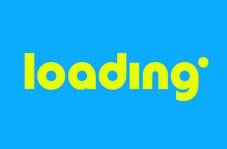

Essa e minha primeira entrada aqui, bom como fazemos isso? Bom isso e a nuvem, e um prazer
ver vocês aqui de cima (risos), bom isso na verdade e uma máquina de aparência frigida
mas inteiro quente, movida a um Intel Xeon Silver, em algum lugar lá nos EUA
Bom ... Meu nome é Ruaneri, sou atualmente aluno de engenharia da computação você está
aqui no meu cantinho virtual, bom seja bem-vindo! Para aqueles que não sabem (com certeza
não saberiam) ひらめき ou em romanji “hirameki” significa "Inspiração" então seja bem-vindo
ao hub da inspeção.
Sobre essa pagina, bom meus conhecimentos em HTML são bem pífios, medíocres, insuficientes
(Eufemismos para suavizar minha incompetência no assunto), mas espero aprender a manipular
tanto o HTML e esse servidor que hospeda.
Gostaram da fonte do texto, o nome dela e CADET, você pode baixar do nosso servidor se descobrir
a pasta... essa fonte foi usada como parte do material visual da extinta Loading, a única emissora
Otaku da história do Brasil

parecido né? bom ela não e 100 fidedigna, acho que a equipe gráfica da Loading á ajustou, mas a CADET e a fonte mais próxima!
Bom e isso, gente tenha todos uma boa, semana!
Ah a música da semana é STILL FREE BY DANGER do jogo Haven ❤️